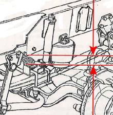
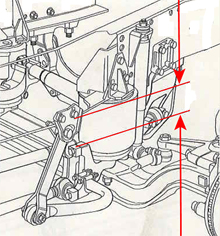
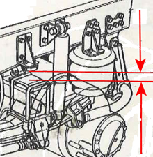

The vehicle will move up and down when the air suspension is calibrated. It is therefore extremely important that no persons or equipment remain in the area around or underneath the vehicle, to prevent damage or injury.
Note:
If level outside approved range is used, the vehicle will not assume the level and fault codes are saved.
Test conditions:
Ignition on with external air supply connected or engine running.
Vehicle unloaded.
The vehicle must stand on level ground.
On vehicles with a lifting axle, this must be lowered.
Ensure that the button for the support shaft/load transfer and any alternative ride height (if the vehicle has this function) is released.
To prevent tension in the chassis during calibration, the parking brake must first be released. Secure the vehicle using chocks under the rear and front wheels before starting the procedure.
Performing driving level calibration:
Raise the chassis to insert the spacers.
Place the spacers close to each bellows.
Lower the vehicle on the spacers using the buttons in the program.
Perform calibration.
Exit the function.
Information for spacers and their placement:
| Vehicle type: | Height of rear spacers | Height of front spacers |
| Full air | 60 mm | 65 mm |
| Full air with low chassis | 60 mm | 55 mm |
| Full air with 5 torsion rods | 60 mm | 195 mm |
| Half air | 60 mm | ----- |

Front full air 65 mm / front full air with low chassis 55 mm. (See figure above)

Front full air with 5 torsion rods 195 mm. (See figure above)

Rear half air/full air 60 mm. (See figure above)